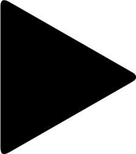

VIDEO AULAS
Apreda sobre a Quimica Organica e aprenda mais, de uma forma mais interativa com nossas video-aulas.

Apreda sobre a Quimica Organica e aprenda mais, de uma forma mais interativa com nossas video-aulas.